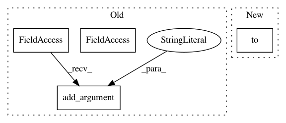

927d2b319bc7a6c31c63ad64e6124477c2a5b583,examples/pytorch/ogb/ogbn-products/gat/main.py,,,#,207
Before Change
argparser.add_argument("--log-every", type=int, default=20)
argparser.add_argument("--eval-every", type=int, default=1)
argparser.add_argument("--lr", type=float, default=0.001)
argparser.add_argument("--dropout", type=float, default=0.5)
argparser.add_argument("--num-workers", type=int, default=8,
help="Number of sampling processes. Use 0 for no extra process.")
argparser.add_argument("--save-pred", type=str, default="")
argparser.add_argument("--head", type=int, default=4)
After Change
train_idx, val_idx, test_idx = splitted_idx["train"], splitted_idx["valid"], splitted_idx["test"]
graph, labels = data[0]
nfeat = graph.ndata.pop("feat").to(device)
labels = labels[:, 0].to(device)
print("Total edges before adding self-loop {}".format(graph.num_edges()))
graph = graph.remove_self_loop().add_self_loop()
print("Total edges after adding self-loop {}".format(graph.num_edges()))
In pattern: SUPERPATTERN
Frequency: 3
Non-data size: 4
Instances
Project Name: dmlc/dgl
Commit Name: 927d2b319bc7a6c31c63ad64e6124477c2a5b583
Time: 2020-12-28
Author: mufeili1996@gmail.com
File Name: examples/pytorch/ogb/ogbn-products/gat/main.py
Class Name:
Method Name:
Project Name: naoto0804/pytorch-AdaIN
Commit Name: 4a5eef64d2a0ab5e1737ffbb345d9e72d2f1adc9
Time: 2018-05-16
Author: inoue@hal.t.u-tokyo.ac.jp
File Name: test.py
Class Name:
Method Name:
Project Name: naoto0804/pytorch-AdaIN
Commit Name: 4a5eef64d2a0ab5e1737ffbb345d9e72d2f1adc9
Time: 2018-05-16
Author: inoue@hal.t.u-tokyo.ac.jp
File Name: train.py
Class Name:
Method Name: